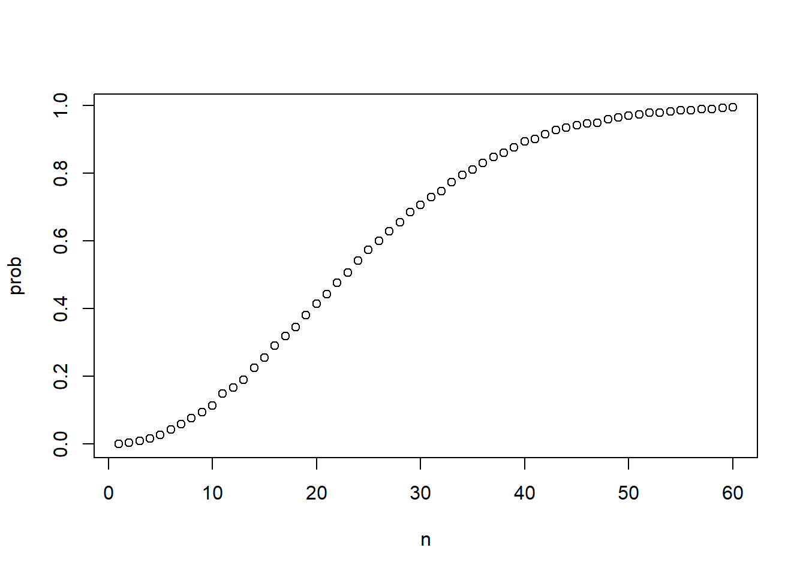
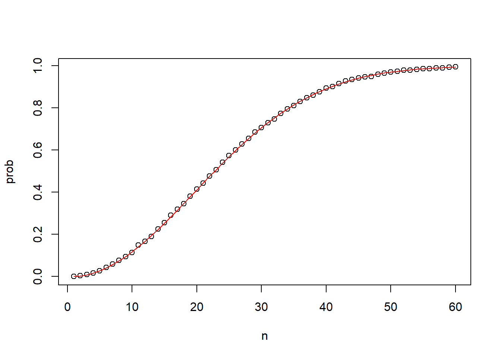

Discrete Probability
beads <- rep( c('red', 'blue'), times = c(2,3))
beads
## [1] "red" "red" "blue" "blue" "blue"
Produces a random outcome
## [1] "red"
Goal is to repeat the experiment a large number of times to give an accurate probability if the experiment was repeated infinity.
We can use a Monte Carlo simulation. To do this, we can use the replicate() function to repeat the same task any number of times we want.
B <- 10000
events <- replicate(B, sample(beads,1))
We can create a table of our outcomes using the table() function as well as see the proportion by using prop.table().
## events
## blue red
## 5918 4082
## events
## blue red
## 0.5918 0.4082
We actually don’t have to use the replicate() function for this example because the sample() function actually has an argument that permits us to pick more than one element form the urn with replacement.
events <- sample(beads, B, replace=TRUE)
prop.table(table(events))
## events
## blue red
## 0.6045 0.3955
In R, applying the mean() function to a logical vector returns the proportion of elements that are TRUE. It is very common to use the mean() function in this way to calculate probabilities and we will do so throughout the course.
Suppose you have the vector beads from a previous video:
beads <- rep(c("red", "blue"), times = c(2,3))
beads
## [1] "red" "red" "blue" "blue" "blue"
To find the probability of drawing a blue bead at random, you can run:
## [1] 0.6
This code is broken down into steps inside R. First, R evaluates the logical statement beads == "blue", which generates the vector:
FALSE FALSE TRUE TRUE TRUE
When the mean function is applied, R coerces the logical values to numeric values, changing TRUE to 1 and FALSE to 0:
0 0 1 1 1
The mean of the zeros and ones thus gives the proportion of TRUE values. As we have learned and will continue to see, probabilities are directly related to the proportion of events that satisfy a requirement.
Probability distributions
Defining a distribution for categorical outcomes is straight forward. We assign a probability to each category.
Two events are independent if the outcome of one does not affect the outcome of the other e.g. coin toss or picking beads with replacement.
When events are not independent, conditional probabilities are useful and necessary to make correct calculations
To calculate the probability that the second card dealt from a deck of cards is a king, given that the first card dealt was a king. The | pipe means given that or conditional on
Pr(Card 2 is a king) | Card 1 is a king) = 3/51
If the probability of A and B are independent, you can express the probability of A like this:
Pr(A|B)=Pr(A)
It doesn’t matter what the probability of B is in this example because the probabilities are independent.
If we want to know the probability of A and B occurring, we can use the multiplication rule. The probability of A and and B is equal to the probability of A multiplied by the probability of B given that A already happened.
Pr(A and B) = Pr(A)*Pr(B|A)
In blackjack, you can calculate the probability of you first getting an Ace then having the next card be a face card or a 10 using the following:
Pr(Ace and face) = Pr(Ace)*Pr(Face|Ace)
## [1] 0.02413273
So, the probability of A and B and C is equal to the probability of A times the probability of B given that A happened times the probability of C given that A and B happened
Pr(A and B and C) = Pr(A)*Pr(B|A)*Pr(C|A and B)
One ball will be drawn at random from a box containing: 3 cyan balls, 5 magenta balls, and 7 yellow balls.
box <- rep( c('cyan', 'magenta', 'yellow'), times = c(3,5,7))
box
## [1] "cyan" "cyan" "cyan" "magenta" "magenta" "magenta" "magenta"
## [8] "magenta" "yellow" "yellow" "yellow" "yellow" "yellow" "yellow"
## [15] "yellow"
Instead of taking just one draw, consider taking two draws. You take the second draw without returning the first draw to the box. We call this sampling without replacement.
## [1] 0.1714286
Now repeat the experiment, but this time, after taking the first draw and recording the color, return it back to the box and shake the box. We call this sampling with replacement.
What is the probability that the first draw is cyan and that the second draw is not cyan?
## [1] 0.16
Combinations and Permutations
# joining strings with paste
number <- "Three"
suit <- "Hearts"
paste(number, suit)
## [1] "Three Hearts"
# joining vectors element-wise with paste
paste(letters[1:5], as.character(1:5))
## [1] "a 1" "b 2" "c 3" "d 4" "e 5"
The function expland.grid() gives us all combinations of 2 lists.
expand.grid(pants = c("blue", "black"), shirt = c("white", "grey", "plaid"))
## pants shirt
## 1 blue white
## 2 black white
## 3 blue grey
## 4 black grey
## 5 blue plaid
## 6 black plaid
To generate a deck of cards:
suits <- c("Diamonds", "Clubs", "Hearts", "Spades")
numbers <- c("Ace", "Deuce", "Three", "Four", "Five", "Six", "Seven", "Eight", "Nine", "Ten", "Jack", "Queen", "King")
deck <- expand.grid(number = numbers, suit = suits)
deck <- paste(deck$number, deck$suit)
To find the probability of drawing a king:
kings <- paste("King", suits)
mean(deck %in% kings)
## [1] 0.07692308
What is the conditional probability of the second card is a king?
The permutations() function computes, for any list of size ‘n’ all the different ways we can select ‘r’ items.
library(gtools)
# This will calculate all the ways you can choose 2 numbers from a list of 1-5.
permutations(5,2)
## [,1] [,2]
## [1,] 1 2
## [2,] 1 3
## [3,] 1 4
## [4,] 1 5
## [5,] 2 1
## [6,] 2 3
## [7,] 2 4
## [8,] 2 5
## [9,] 3 1
## [10,] 3 2
## [11,] 3 4
## [12,] 3 5
## [13,] 4 1
## [14,] 4 2
## [15,] 4 3
## [16,] 4 5
## [17,] 5 1
## [18,] 5 2
## [19,] 5 3
## [20,] 5 4
To compute all the possible ways that you can choose 2 cards when the order matters we can type:
# We have 52 cards, we will choose 2, and we will select them from the vector of our card names
hands <- permutations(52,2, v = deck)
first_card <- hands[,1]
second_card <- hands[,2]
# How many cases is the first card a king?
sum(first_card %in% kings)
## [1] 204
# We ask how what fraction of these 204 also have a king in the second card?
sum(first_card %in% kings & second_card %in% kings) / sum(first_card %in% kings)
## [1] 0.05882353
What if the order does not matter? Use the combinations() function since the order doesn’t matter.
Compare the two functions
## [,1] [,2]
## [1,] 1 2
## [2,] 1 3
## [3,] 2 1
## [4,] 2 3
## [5,] 3 1
## [6,] 3 2
## [,1] [,2]
## [1,] 1 2
## [2,] 1 3
## [3,] 2 3
Define a vector that includes all the aces, avector that includes all the face cards and 10’s, then generate all the combinations of picking 2 cards out of 52.
aces <- paste("Ace", suits)
facecard <- c("King", "Queen", "Jack", "Ten")
facecard <- expand.grid(number = facecard, suit = suits)
facecard <- paste(facecard$number, facecard$suit)
hands <- combinations(52, 2, v=deck) # all possible hands
# probability of a natural 21 given that the ace is listed first in `combinations`
mean(hands[,1] %in% aces & hands[,2] %in% facecard)
## [1] 0.04826546
You can also use a Monte Carlo simulation to calculate the probability of getting blackjack on the first 2 cards.
Use the sample() function to draw cards without replacement
hand <- sample(deck, 2)
hand
## [1] "Four Spades" "Six Clubs"
# code for B=10,000 hands of blackjack
B <- 10000
results <- replicate(B, {
hand <- sample(deck, 2)
(hand[1] %in% aces & hand[2] %in% facecard) | (hand[2] %in% aces & hand[1] %in% facecard)
})
mean(results)
## [1] 0.0486
The birthday problem
If you are in a classroom with 50 people, assuming it is a randomly selected group, what is the chance that at least 2 people have the same birthday?
We will calculate this later, but first we can use the Monte Carlo simulation.
n <- 50
calendar <- 1:365
bdays <- sample(calendar, n, replace=TRUE)
To check to see if two people have the same birthday, use the function duplicated() which returns TRUE if any element of a vector has already appeared in that vector.
## [1] TRUE
b <- 10000
results <- replicate(B,{
bdays <- sample(calendar, n, replace=TRUE)
any(duplicated(bdays))
})
Take the mean to determine how likely it is for two people to have the same birthday
## [1] 0.9669
sapply
sapply() allows us to perform element-wise operations on any function.
This will apply square root to each element of x. You actually don’t need to do this because sqrt() already operates on a vector element by element, but some functions do not.
x <- 1:10
sapply(x, sqrt)
## [1] 1.000000 1.414214 1.732051 2.000000 2.236068 2.449490 2.645751 2.828427
## [9] 3.000000 3.162278
If you wanted to bet on the chances that 2 people have the same birthday in a group of people, you can use a Monte Carlo simulation. We will define a function to cacluate the probability of shared bdays across n people.
compute_prob <- function(n, B = 10000) {
same_day <- replicate(B, {
bdays <- sample(1:365, n, replace = TRUE)
any(duplicated(bdays))
})
mean(same_day)
}
n <- seq(1, 60)
prob <- sapply(n, compute_prob)

If we wanted to compute the exact value instead of using a Monte Carlo Simulation we can calculate the exact value. Instead of calculating the probability of it happening, it is faster to calculate the probability of it not happening then use the multiplication rule.
Starting with person 1, the probability that they have a unique birthday is 1.
We can compute the probability of shared birthdays mathematically:
exact_prob <- function(n){
prob_unique <- seq(365, 365-n+1)/365
# the probabilty of an event happening is 1 minus the probability of the event not happening
1 - prod( prob_unique)
}
eprob <- sapply(n, exact_prob)
# Compare monte carlo plot to exact probabilty plot
plot(n, prob)
lines(n, eprob, col = 'red')

